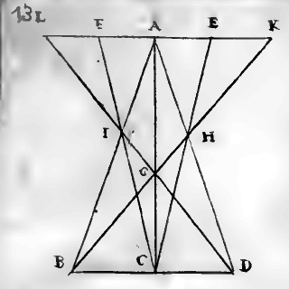

Propositio X · Problema VIII & Lemma V¶



PROP. X. PROB. VIII. (tab. 1. fig. 5.)
Exposita eadem secundi elementi figura, datisque rationibus DA ad AB, & DE ad BC oporteat rationem CK ad KE manifestare.
Sit ratio DA ad AB, vt 2 ad 3, & DE ad BC, vt 5 ad 4; quia proportio CK ad KE componitur ex rationibus ponderum E ad A ad C, rectarum videlicet AD ad DE, & CB ad BA; ex his autem rationibus componitur etiam rectangulum ex AD in CB, ad rectangulum ex DE in BA; quae quidem rectangula componuntur etiam ex duabus rationibus DA ad BA, & CB ad DE, hoc est ex duabus 2 ad 3, & 4 ad 5; erit DA ad AB, vt 8 ad 15, nempè vt productum ex DA in CB ad productum ex BA in DE, quod erat &c.
Idem geometricè ex praedicto Petro Paulo Carauaggio Iuniore.
Quarum partium ED est 2, sit CB 5; & quarum DA est 1, sit AB 3. Dico CK ad KE eandem rationem habere, quam habet rectangulum ex AD in CB ad rectangulum ex ED in EB, videlicet vt 5 ad 6.
Quoniam enim vt AD ad DE, ita triangulum ACD ad triangulum DCE, vt autem AD ad DE, ita triangulum AFD ad triangulum DFE; ergo vt AD ad DE, ita erit triangulum ACF ad triangulum FCE. Similiter erit vt CB ad BA, ita triangulum EFC ad triangulum EFA; habet igitur triangulum AFC ad triangulum AFE rationem compositam ex AD ad DE, & CB ad BA; sed vt triangulum AFC ad triangulum AFE, ita CK ad KE; igitur CK ad KE habet rationem compositam
f. 0033 · p. 16ex AD ad DE, & CB ad BA; Sed ex iisdem rationibus componitur ratio, quam habet rectangulum ex AD in BC ad rectangulum ex DE in BA; ergo vt rectangulum ex AD in BC ad rectangulum ex DE in BA, ita CK ad KE, quod erat &c.
Idem ego geometricè praestiti nondum tradita mihi solutione Carauaggij, sequenti lemmate praemisso.
LEMMA V. (tab. 2. fig. 13.)
Sit triangulum ABD, in quo se inuicem secent lineae DGI, BGH, AGC in G; ex puncto autem A ducta FE parallela BD occurrat in punctis FE lineis CIF, & CHE; dico rectam FA esse aequalem AE.*
Producantur BH, DI, donec occurrant in KL rectae LK. Quoniam DC ad LA est vt CG ad GA, vt autem CG ad GA, ita BC ad AK, erit vt DC ad LA, ita BC ad AK, & permutando DC ad CB, vt LA ad AK. Rursus, quia CD ad AE est vt CH ad HE, vt autem CH ad HE, ita BC ad EK, erit CD ad AE, vt BC ad EK; & permutando CD ad CB, erit vt AE ad EK: denique quoniam similiter CD ad CB est vt LF ad FA, erunt tres rationes LA ad AK, AE ad EK, LF ad FA similes eidem CD ad CB, & propterea etiam inter se; cum itaque sit vt LF ad FA, ita AE ad EK, & componendo vt LA ad AF, ita AK ad EK, erit permutando vt LA ad AK, ita AF ad EK; sed vt LA ad AK, ita est quoque AE ad EK; ergo vt est AF ad EK, ita AE ad eandem EK; ergo FA, AE sunt aequales, quod &c.
Detur triangulum AHE, seque in illo inuicem secent in I lineae EK, FA, HD; datis deinde rationibus AK ad AD, & KH ad DE in numeris oporteat inuestigare rationem EF ad FH.* (tab. 2. fig. 14.)
Ducatur à puncto A recta BC parallela HE; à puncto verò F per KD ductae rectae FB, FC secent BC in punctis BC, ducatur denique ex A recta AG parallela CF occurrens productae EH in G.
Quoniam GA est parallela FC, & AC parallela GF, erit AF parallelogrammum, eritque GF aequalis AC, hoc est AB; cùm
f. 0034 · p. 17itaque ratio EF ad FH componatur ex duabus rationibus EF ad FG, & FG ad FH, sitque vt EF ad FG, ita ED ad DA, vtque FG, hoc est AB ad FH, ita AK ad KH, erit ratio EF ad FH composita ex duabus rationibus ED ad DA, & AK ad KH; sed ex ijsdem componitur ratio rectanguli ex AK in DE ad rectangulum ex KH in AD, seu ex his duabus alijs KA ad AD, & DE ad HK; igitur etiam EF ad FH componitur ex ijsdem rationibus KA ad AD, & DE ad KH, quae cum datae sint, ratio EF ad FH manifesta erit, quod &c.